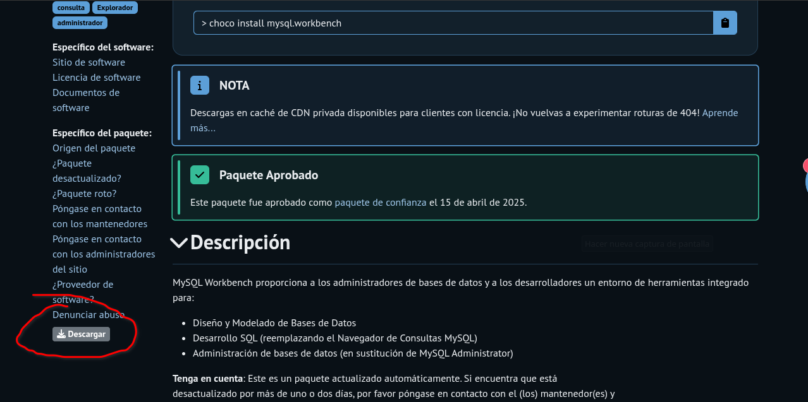
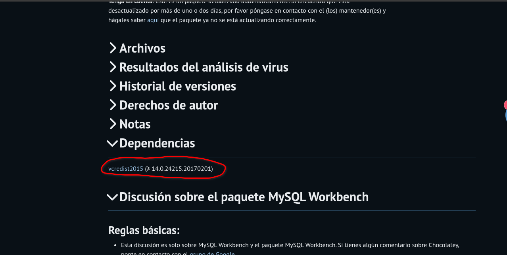
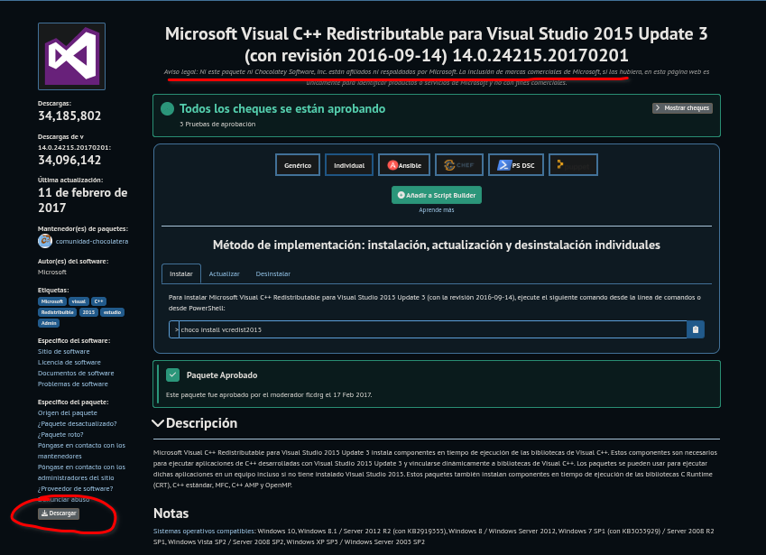

Instalación, creación de paquetes, automatización y despliegue
Esta guía fue diseñada para introducir a los usuarios en el uso de Chocolatey, el potente y flexible gestor de paquetes para Windows, abarcando desde su instalación inicial hasta la creación, aprovisionamiento y publicación de paquetes personalizados para la automatización y gestión eficiente del software.
Antes de instalar Chocolatey, asegúrate de cumplir con los siguientes requisitos:
Set-ExecutionPolicy Bypass -Scope Process -Force; [System.Net.ServicePointManager]::SecurityProtocol = [System.Net.ServicePointManager]::SecurityProtocol -bor 3072; iex ((New-Object System.Net.WebClient).DownloadString('https://community.chocolatey.org/install.ps1'))
Una vez completada la instalación, abre una nueva ventana de PowerShell o CMD y ejecuta:
choco --version
Instala un paquete simple como 7zip para verificar que Chocolatey funciona correctamente:
choco install 7zip -y
| Problema | Solución |
|---|---|
| Choco no se reconoce como un comando | Cierra y vuelve a abrir PowerShell/CMD. Asegúrate de que la ruta C:\ProgramData\chocolatey\bin esté en la variable de entorno PATH. |
| Error de permisos | Asegúrate de ejecutar PowerShell como administrador. |
| Fallo al descargar el script | Verifica tu conexión a Internet y asegúrate de que no hay un firewall o
proxy bloqueando https://community.chocolatey.org. |
C:\ProgramData\chocolatey
C:\ProgramData\chocolatey\binBusca paquetes disponibles en el repositorio oficial de Chocolatey que coincidan con el nombre o parte del nombre indicado.
choco search <busqueda>Ejemplo
choco search vscode
Instala el paquete especificado. El modificador -y acepta automáticamente los términos de licencia y omite las confirmaciones.
choco install <paquete>Ejemplo
choco install vscode
Actualiza el paquete especificado a su versión más reciente disponible.
choco upgrade <paquete>Ejemplo
choco upgrade vscode
🔁Actualizar todos los paquetes
choco upgrade all -y
Desinstala el paquete indicado del sistema. El parámetro -y evita que se solicite confirmación.
choco uninstall <paquete> -y
Ejemplo
choco uninstall vscode -y
Muestra información detallada sobre un paquete, incluyendo su descripción, versión, autor y dependencias.
choco info <paquete>
Ejemplo
choco info vscode
choco list
Muestra la lista de todos los paquetes instalados localmente en tu sistema mediante Chocolatey.
choco list -i
| Opción | Descripción |
|---|---|
| -?, --help, -h | Muestra el menú de ayuda del comando. |
| --online | Abre la documentación del comando en el navegador. Solo funciona con --help. |
Ejemplo:
choco install git --help
| Opción | Descripción |
|---|---|
| -d, --debug | Muestra mensajes de depuración. Útil para ver lo que pasa internamente. |
| -v, --verbose | Muestra mensajes más detallados. No recomendado para uso normal. |
| --trace | Nivel aún más detallado que verbose. Muy técnico. |
| --nocolor | Elimina el color de los mensajes en consola. Útil en logs. |
| Opción | Descripción |
|---|---|
| --acceptlicense | Acepta automáticamente las licencias. (Futuro uso). |
| -y, --yes, --confirm | Acepta todas las preguntas (instalación/desinstalación). Implica --accept-license. |
| -f, --force | Fuerza la acción, incluso si hay advertencias. Usar con precaución. |
| --noop, --whatif | Simula la acción sin ejecutarla realmente. |
| Opción | Descripción |
|---|---|
| -r, --limitoutput | Muestra solo información esencial. |
| -y, --yes, --confirm | Acepta todas las preguntas (instalación/desinstalación). Implica --accept-license. |
| --timeout=SEGUNDOS | Cambia el tiempo máximo de espera por comando. 0 = sin límite. |
| --log-file=archivo.log | Guarda los logs en un archivo adicional. |
| Opción | Descripción |
|---|---|
| --proxy=URL | Usa un proxy específico para las descargas. |
| --proxy-user, --proxy-password | Credenciales del proxy. |
| --proxy-bypass-list, --proxy-bypass-on-local | Especifica excepciones para el proxy. |
| Opción | Descripción |
|---|---|
| -s, --source=URL o nombre | Fuente de donde instalar (repositorio). |
| --version=VERSIÓN | Especifica versión del paquete a instalar/desinstalar. |
| -a, --allversions | Desinstala todas las versiones del paquete. |
| Opción | Descripción |
|---|---|
| --params, --parameters, --pkgparameters, --packageparameters, --package-parameters=VALUE | Parámetros personalizados para pasar al paquete. |
| --argsglobal, --args-global, --installargsglobal, --install-args-global, --applyargstodependencies, --apply-args-to-dependencies, --apply-install-arguments-to-dependencies | Aplica argumentos de instalación a los paquetes dependientes. |
| --paramsglobal, --params-global, --packageparametersglobal, --package-parameters-global, --applyparamstodependencies, --apply-params-to-dependencies, --apply-package-parameters-to-dependencies | Aplica parámetros del paquete a los paquetes dependientes. |
| -o, --override, --overrideargs, --overridearguments, --override-arguments | Usa únicamente los argumentos proporcionados, sin añadir otros. |
| --notsilent, --not-silent | No desinstala en modo silencioso. |
| Opción | Descripción |
|---|---|
| -x, --forcedependencies, --force-dependencies, --removedependencies, --remove-dependencies | Desinstala las dependencias junto con el paquete. |
| -n, --skippowershell, --skip-powershell, --skipscripts, --skip-scripts, --skip-automation-scripts | No ejecuta los scripts PowerShell del paquete. |
| --ignorepackagecodes, --ignorepackageexitcodes, --ignore-package-codes, --ignore-package-exit-codes | Ignora los códigos de salida de los scripts del paquete y usa 0 o 1 como salida global. |
| --usepackagecodes, --usepackageexitcodes, --use-package-codes, --use-package-exit-codes | Usa los códigos de salida definidos por los scripts del paquete como salida global. |
| --autouninstaller, --use-autouninstaller | Usa el desinstalador automático de Chocolatey. |
| --skipautouninstaller, --skip-autouninstaller | Omite el uso del desinstalador automático. |
| --failonautouninstaller, --fail-on-autouninstaller | Falla la desinstalación si el desinstalador automático tiene errores. |
| --ignoreautouninstallerfailure, --ignore-autouninstaller-failure | No falla si el desinstalador automático encuentra errores. |
| --stoponfirstfailure, --stop-on-first-failure, --stop-on-first-package-failure | Detiene la instalación/desinstalación si falla el primer paquete. |
| --exitwhenrebootdetected, --exit-when-reboot-detected | Finaliza si se detecta que el sistema requiere reinicio. |
| --ignoredetectedreboot, --ignore-detected-reboot | Ignora si se detecta que el sistema requiere reinicio. |
| --skiphooks, --skip-hooks | No ejecuta scripts de gancho (hooks). |
| --fromprograms, --from-programs, --fromprogramsandfeatures, --from-programs-and-features | Desinstala un programa usando su nombre en “Programas y características” (solo versión licenciada). |
| --use-self-service, --force-self-service | Fuerza el uso de autoservicio si está habilitado (solo versiones empresariales). |
Un paquete de Chocolatey se basa en un archivo .nuspec, que define los metadatos del paquete.
Comando para generalo:
choco new nombre-del-paquete
Esto creará una estructura básica de carpeta con:
mi-paquete/
├── mi-paquete.nuspec # Archivo de manifiesto
└── tools/
├── chocolateyInstall.ps1 # Script de instalación
└── (opcional) chocolateyUninstall.ps1 # Script de desinstalación
Abra el archivo .nuspec y edite los metadatos del paquete.
Los metadatos principales son:
nombre-del-paquete
1.0.0
Título descriptivo
TuNombre
Descripción detallada del paquete.
https://sitio-del-proyecto
palabras clave
No incluir .exe, .msi, etc. en
Campos obligatorios ( id, version, authors, description).
Ubicado en tools\chocolateyInstall.ps1. Aquí es donde se debe aplicar lógica dinámica y práctica.
$ErrorActionPreference = 'Stop' # si algo falla, detener el script
$packageName = $env:ChocolateyPackageName # nombre del paquete
$toolsDir = Split-Path -Parent $MyInvocation.MyCommand.Definition # ruta de la carpeta tools
$packageArgs = @{
packageName = $packageName # nombre del paquete optenido de .nuspec
fileType = 'exe' # tipo de archivo ( exe, msi, etc.)
url = 'https://example.com/software_installer.exe' # URL del paquete
url64bit = 'https://example.com/software_installer_x64.exe' # URL del paquete 64 bits
softwareName = 'Mi Software*' # nombre del software
silentArgs = '/S' # argumentos de silencio
validExitCodes = @(0, 3010) # códigos de salida validos
checksum = 'ABCDEF1234567890...' # checksum
checksumType = 'sha256' # tipo de checksum
checksum64 = '1234567890ABCDEF...' # checksum
checksumType64 = 'sha256' # tipo de checksum
}
Install-ChocolateyPackage @packageArgs # Instala el paquete
$ErrorActionPreference = 'Stop'
$packageName = $env:ChocolateyPackageName
$toolsDir = Split-Path -Parent $MyInvocation.MyCommand.Definition
$installerPath = Join-Path $toolsDir 'mi-app.exe'
$packageArgs = @{
packageName = $packageName # nombre del paquete
fileType = 'exe' # o 'msi' según el caso
file = $installerPath
silentArgs = '/S' # o '/quiet' para msi
validExitCodes = @(0, 3010)
}
Install-ChocolateyInstallPackage @packageArgs
| Parámetro | Descripción | Ejemplo práctico | Notas | ✅ Obligatorio |
|---|---|---|---|---|
| packageName | Nombre del paquete (referencia lógica interna) | $env:ChocolateyPackageName |
Dinámico: evita hardcodear | ✅ Sí |
| fileType | Tipo de archivo a instalar: exe, msi,
zip, portable
|
'exe', 'msi', 'zip',
'portable'
|
zip requiere extracción; portable necesita scripts
personalizados |
✅ Sí |
| url | URL directa al instalador (32 bits o genérico) | 'https://example.com/app32.exe' |
Si solo tienes una arquitectura, usa solo url |
✅ Sí (si no hay url64bit) |
| url64bit | URL directa para sistemas de 64 bits | 'https://example.com/app64.exe' |
Opcional pero recomendable | ❌ No |
| silentArgs | Parámetros de instalación silenciosa | '/S', '/VERYSILENT', '/qn' |
Requiere investigación por tipo de instalador | ✅ Sí |
| validExitCodes | Códigos de salida válidos tras instalar | @(0), @(0, 3010) |
3010 = requiere reinicio |
❌ No (pero recomendable) |
| checksum | Hash SHA del archivo de 32 bits o genérico | 'D8B6E8714B8E135D3AF0D4C8A37B39C6B6D30AE28B40B1F01B23A17F72C5197A'
|
Obligatorio para subir a Chocolatey.org | ✅ Sí (si publicas en chocolatey.org) |
| checksumType | Algoritmo del checksum (md5, sha1,
sha256, sha512)
|
'sha256' |
sha256 es el estándar recomendado |
✅ Sí (si defines checksum) |
| checksum64 | Hash SHA del archivo de 64 bits | '19C24B187C5BA942D77A2A07D23E431E51D8A17708F302BC9609A877DAD2F3B9'
|
Solo necesario si defines url64bit |
✅ Sí (si defines url64bit) |
| checksumType64 | Algoritmo del checksum64 | 'sha256' |
Debe coincidir con checksum64 |
✅ Sí (si defines checksum64) |
A Continuación, se detalla algunos ejemplos de parámetros mostrado previamente:
Un checksum (hash) es una firma digital única de un archivo. Chocolatey los usa para verificar que el archivo descargado no fue modificado ni corrompido.
Get-FileHash -Path "C:\ruta\al\archivo.exe" -Algorithm SHA256
Salida:
Algorithm : SHA256
Hash : 6A9F0D07A4BD3D129DB16D75F1C8A5A3D87A1CDBEF32C3DCA4C223EAA63B7709
Path : C:\ruta\al\archivo.exe
Son los códigos de salida que Chocolatey considerará como una instalación exitosa.
| Código | Significado | Acción de Chocolatey |
|---|---|---|
| 0 | Instalación exitosa | ✅ OK |
| 3010 | Instalación correcta, pero requiere reinicio | ⚠️ Avisa, pero no falla |
| 1, 1603, etc | Error de instalación | ❌ Error (a menos que lo permitas) |
validExitCodes = @(0, 3010)
Si no incluyes 3010 y el instalador lo mostrará que falló aunque no sea así.
Cada tipo de instalador usa parámetros distintos para instalación silenciosa (sin GUI ni interacción)
| Tipo de instalador | silentArgs típicos | Notas |
|---|---|---|
| NSIS | /S | Mayúscula obligatoria |
| InnoSetup | /VERYSILENT /SUPPRESSMSGBOXES | Recomendado añadir /NORESTART |
| MSI | /s | A veces necesita un archivo setup.iss |
| SFX (WinRAR/7z) | /s | Limitado, depende de cómo se generó |
| EXE genérico | Investigar con /?, /h, -?, --help | Prueba manualmente en consola |
installer.exe /?
O
Start-Process ".\archivo.exe" -ArgumentList '/?' -Wait
| Escenario | ¿Qué usar? | Ejemplo |
|---|---|---|
| Un solo instalador para todas las arquitecturas | Instaladores diferentes para 32 y 64 bits | |
| Solo url | url y url64bit | |
| 'https://ejemplo.com/setup.exe' | 'setup32.exe', 'setup64.exe' |
Chocolatey instalará la versión adecuada según la arquitectura del sistema:
$url = 'https://ejemplo.com/setup32.exe'
$url64 = 'https://ejemplo.com/setup64.exe'
Y debes incluir ambos checksum y checksum64.
choco pack
choco install nombredelpaquete -s .
El parámetro -s . (source local) hace que use el .nupkg en el directorio actual.
La diferencia entre un paquete normal de Chocolatey y uno de aprovisionamiento está en su objetivo y alcance, no tanto en la estructura técnica (que es casi igual).
Es un paquete que instala una sola aplicación específica.
Ejemplo:
choco install vlc
Es un paquete personalizado que instala y configura múltiples cosas a la vez: programas, configuraciones, scripts, accesos directos, etc.
Ejemplo:
choco install mi-paquete-de-aprovisionamiento --source .
Esto puede:
📦 El paquete mi-aprovisionamiento:
| Característica | Paquete normal | Paquete de aprovisionamiento |
|---|---|---|
| Propósito | Instala una sola aplicación | Instala y configura múltiples cosas a la vez |
| Instalación múltiple | No | Si |
| Contenido | Binarios de una app | Scripts, accesos directos, apps, etc |
| Fuente común | Repositorio de Chocolatey | Personal o interno |
| Ideal para... | Usuarios finales | Técnicos, IT, imágenes base |
| Customización | Muy limitada | Total (scripts PowerShell) |
Abre PowerShell y ejecuta:
choco new aprovisionamiento-inicial
cd aprovisionamiento-inicial
Esto crea una carpeta con esta estructura:
aprovisionamiento-inicial/
├── aprovisionamiento-inicial.nuspec
└── tools/
└── chocolateyInstall.ps1
Abre aprovisionamiento-inicial.nuspec y ajusta:
aprovisionamiento-inicial
1.0.0
Aprovisionamiento Inicial
TuNombre
TuNombre
Instala aplicaciones comunes y ejecuta configuraciones.
aprovisionamiento chocolatey automatizacion
Crea una carpeta dentro de tools llamada instaladores:
mkdir tools\instaladores
Y pon ahí tu archivo MiApp.exe. Puedes usar un ejecutable de prueba o un dummy por ahora.
Reemplaza todo el contenido con lo siguiente:
$ErrorActionPreference = 'Stop'
# Instalar software desde Chocolatey
choco install googlechrome -y
choco install vlc -y
choco install notepadplusplus -y
# Ejecutar instalador local (instalación silenciosa)
$exePath = Join-Path $PSScriptRoot 'instaladores\MiApp.exe'
if (Test-Path $exePath) {
Start-Process -FilePath $exePath -ArgumentList '/S' -Wait
} else {
Write-Warning "Instalador local no encontrado: $exePath"
}
# Crear accesos directos
$shortcutDir = "$env:Public\Desktop\Aprovisionamiento"
New-Item -ItemType Directory -Path $shortcutDir -Force | Out-Null
$apps = @(
@{ Name = "Google Chrome"; Path = "${env:ProgramFiles(x86)}\Google\Chrome\Application\chrome.exe" },
@{ Name = "VLC"; Path = "${env:ProgramFiles}\VideoLAN\VLC\vlc.exe" },
@{ Name = "Notepad++"; Path = "${env:ProgramFiles}\Notepad++\notepad++.exe" }
)
foreach ($app in $apps) {
if (Test-Path $app.Path) {
$WScriptShell = New-Object -ComObject WScript.Shell
$shortcut = $WScriptShell.CreateShortcut("$shortcutDir\$($app.Name).lnk")
$shortcut.TargetPath = $app.Path
$shortcut.Save()
}
}
# Configuración personalizada
Write-Host "Configuración personalizada completada."
Desde la raíz del paquete:
choco pack
Esto creara un archivo aprovisionamiento-inicial.1.0.0.nupkg
Desde el mismo directorio:
choco install aprovisionamiento-inicial --source . --yes
Chocolatey ejecutará las acciones definidas: instalación de apps, ejecución del EXE y creación de accesos directos.
Chocolatey normalmente instala una sola versión de un paquete a la vez. Sin embargo, con algunos ajustes es posible mantener varias versiones de un mismo software instaladas en paralelo. La mejor práctica es crear paquetes con identificadores de nombre distintos para cada versión (por ejemplo, mysql.workbench8 para la versión 8 y mysql.workbench6 para la 6). A continuación se detalla, paso a paso, cómo lograr esto manualmente usando únicamente Chocolatey y herramientas estándar (sin necesidad de editores de paquetes externos).
.nupkg desde el portal de ChocolateyEl primer paso consiste en obtener los archivos de paquete ( .nupkg ) de las versiones deseadas de MySQL Workbench directamente desde el repositorio comunitario de Chocolatey. En la página del paquete MySQL Workbench en Chocolatey, existe una opción de Download para bajar el .nupkg de la versión seleccionada (normalmente en la barra lateral de la página del paquete). Chocolatey permite descargar el paquete completo desde el portal web para usos offline
Antes de proceder a instalar los paquetes localmente, es importante identificar las dependencias que cada versión de MySQL Workbench requiere. En la misma página de Chocolatey del paquete, busque la sección Dependencies (Dependencias). Para MySQL Workbench, típicamente aparece una dependencia a Microsoft Visual C++ Redistributable. Por ejemplo, versiones recientes de Workbench dependen de vcredist2015 (Visual C++ 2015-2019 Redistributable)
Si una dependencia como vcredist2015 no estuviera ya instalada en el sistema o si se desea realizar la instalación completamente offline, se debe descargar también el .nupkg de esa dependencia desde Chocolatey. Para ello, busque el paquete correspondiente (por ejemplo, vcredist2015 en Chocolatey) y utilice igualmente el botón Download en su página para obtener el archivo .nupkg de la versión adecuada. Guarde este archivo junto con los .nupkg de MySQL Workbench descargados anteriormente.
Una vez obtenidos los archivos .nupkg de MySQL Workbench (y sus dependencias), el siguiente paso
es preparar el paquete para permitir instalaciones lado a lado. Un archivo .nupkg es esencialmente
un archivo ZIP que contiene los metadatos y scripts de Chocolatey para el software. No se requiere
ninguna herramienta externa especial para manipularlo: puede renombrarse la extensión a .zip y
extraerse con el Explorador de Windows o utilizar una herramienta de descompresión común.
Utilice su método preferido para extraer el contenido de cada .nupkg de MySQL Workbench en
carpetas separadas (por ejemplo, en una carpeta mysql.workbench6 para la versión 6.x y otra
mysql.workbench8 para la 8.x). Dentro de cada carpeta encontrará varios archivos, entre ellos el
archivo .nuspec que contiene la información del paquete (nombre, versión, dependencias, etc.) y una
carpeta tools con los scripts de instalación (por ejemplo, chocolateyInstall.ps1 ).
A continuación, localizaremos el archivo .nuspec para editarlo.
El paso clave para permitir múltiples instalaciones es modificar el identificador de paquete (ID) en el
archivo .nuspec . Abra el archivo .nuspec extraído (por ejemplo, mysql.workbench.nuspec ) con
un editor de texto plano. Busque la etiqueta XML <id> dentro del .nuspec . Esta etiqueta define el
nombre del paquete tal como Chocolatey lo registra. Por defecto, para MySQL Workbench será algo
como <id>mysql.workbench</id>.
Reemplace el contenido de
<id>
por un nuevo identificador único que represente la versión
específica. Por ejemplo, si está preparando el paquete para MySQL Workbench 8.0.x, podría usar
<id>mysql.workbench8</id> (o mysql.workbench8.0 según prefiera nomenclatura). Para la
versión 6.3.x, podría usar <id>mysql.workbench6</id>. Este cambio de nombre asegura que
Chocolatey tratará a cada versión como un paquete distinto, evitando conflictos de nombre. Es
recomendable también ajustar la etiqueta <title> para que refleje la versión (por ejemplo, "MySQL
Workbench 8.0.22") y así poder distinguir las instalaciones en interfaces gráficas, aunque esto es
opcional y principalmente informativo. No modifique la etiqueta <version> : déjela con el número
de versión original del software (ya que corresponde a la versión del software que estamos
empaquetando, no de Chocolatey en sí). Guarde los cambios en el .nuspec .